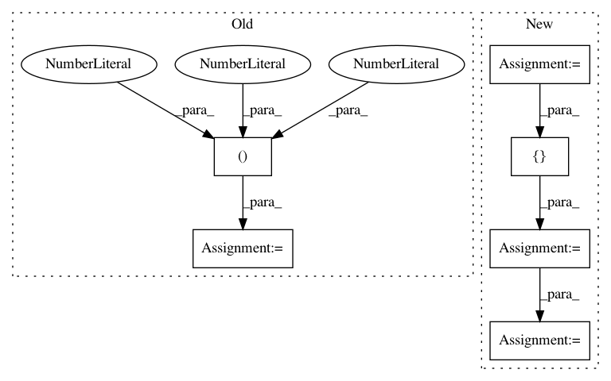

f11c43e9f8ddbc0ce7c02a6f5038c49bc046f495,coremltools/converters/keras/_layers2.py,,convert_permute,#Any#Any#Any#Any#Any#,820
Before Change
// Keras input tensor interpret as (H,W,C)
x = list(_np.array(keras_dims))
i1, i2, i3 = x.index(1), x.index(2), x.index(3)
x[i1], x[i2], x[i3] = 2, 3, 1
// add a sequence axis
x = [0] + x
dim = tuple(x)
elif len(keras_dims) == 4:
After Change
if len(keras_dims) == 3:
// Keras input tensor interpret as (H,W,C)
x = list(_np.array(keras_dims))
arr = [2, 3, 1] // HWC in Keras
arr_permuted = [arr[x[0] - 1], arr[x[1] - 1], arr[x[2] - 1]]
arr_permuted = [arr_permuted[2], arr_permuted[0], arr_permuted[1]] // coreml format: channel first
// add a sequence axis
dim = [0] + arr_permuted
dim = tuple(dim)
In pattern: SUPERPATTERN
Frequency: 3
Non-data size: 6
Instances
Project Name: apple/coremltools
Commit Name: f11c43e9f8ddbc0ce7c02a6f5038c49bc046f495
Time: 2018-08-29
Author: sohaib_qureshi@apple.com
File Name: coremltools/converters/keras/_layers2.py
Class Name:
Method Name: convert_permute
Project Name: jfzhang95/DeepGrabCut-PyTorch
Commit Name: 643bd0823c1f09fcb621207f3345879abf694ab0
Time: 2018-05-28
Author: jessezhjf@gmail.com
File Name: demo.py
Class Name:
Method Name: main
Project Name: rail-berkeley/softlearning
Commit Name: 65878bf34c16e45b6ffaedef305fa260cf474498
Time: 2018-01-23
Author: haarnoja@users.noreply.github.com
File Name: softqlearning/scripts/learn_multigoal.py
Class Name:
Method Name: test